Baseband I/Q Calibration
Scott Chesnut, Verigy
Paper ID: 104617
Abstract
As RF modulation protocols become more complex, better utilization of existing bandwidth becomes key to high density information transmission through the ether. As RF devices become more monolithic, direct conversion of RF signals to base band I and Q signals (and visa versa) becomes the norm. All of these phenomenon increase the requirement that quadrature (I and Q) AWG and DGT be highly balanced in phase and magnitude match relative to each other.
Historically, this requirement has challenged ATE since such balance is frequency and magnitude dependent. In order to calibrate out the frequency response of the I/Q paths, calibration at each tone frequency must occur. But it is impossible for a system calibration procedure to calibrate a tester at all possible frequencies because of the number involved - infinite.
A more tractable approach is to calibrate at only those frequencies and amplitude to be used by a given test program.
SmarTest software has been upgraded to enable users to accomplish this using new Application Programming Interface (API), new additions to the analog calibration menu and a new calibration load board.
This document describes a 93000 test program, which has been written to perform this extended calibration of the I and Q signals of the MCB AWG and DGT when in I/Q mode. Its purpose is to provide a working example of the capability which has been integrated into SmarTest.
The reader of this document will understand: what the capability is, why, when and how it is performed in a SmarTest program.
Description of the Problem
Non linear components in the AWG or DGT path create frequency sensitive impulse functions. This creates frequency sensitive absolute phase and magnitude offsets.
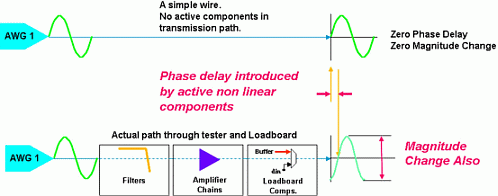
When two MCB AWG or DGT are used for quadrature (I/Q) modulation, the non linear components of both paths have different impulse functions. Frequency sensitive phase and magnitude mismatch occurs even if the AWG (DGT) triggering is precise (+/- 100pS).
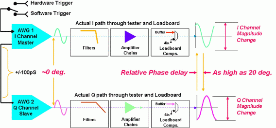
I/Q modulators use relative phase and magnitude to encode data. The different frequency responses of I and Q paths introduce significant error. The "slop" in phase and magnitude corrupts the accuracy of measurement. It must be calibrated out but system level calibration or characterization of this response is impossible. The number of possible frequencies/filter/gain/loadboard component settings would be infinite. The calibration time would take years.
Theory of Operation
Two independent AWG or DGT, when used to transmit or receive I and Q signals, will have a given relative phase and magnitude inaccuracy between them as they transmit or receive signals through an analog path. The extent of these imbalances is frequency and amplitude dependent.
Users can calibrate this imbalance out by sourcing and measuring signals at the amplitudes and frequencies of interest, measuring these offsets called calibration factors, and apply them later during production test.
The process of phase and magnitude calibration as a function of frequency will be referred to in this paper as Baseband I/Q calibration (BIQC). BIQC can be simplified if the target AWG and DGT are used to calibrate themselves instead of using external equipment.
To do so, step one would be to calibrate the DGT using the differential signals of a single AWG. This is because it can be assumed that the phase and magnitude difference between the AWG differential outputs is almost zero.
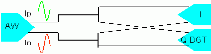
Once the DGT had been calibrated relative to each other, the AWG would then be calibrated.
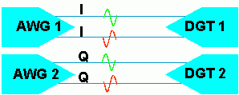
While the above explanation seems simple enough, in reality the implementation become complex because of the necessity to use relays on the DUT board to enable not only the calibration paths previously mentioned but also the paths required to test the DUT itself. Below is a diagram of the relays connections required to calibration just one I/Q signal pair. There are seven relays in the diagram below. But for differential circuits the number of relays would be 14.
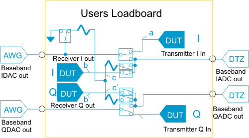
Today's baseband devices have multiple I/Q signal pairs. If seven relays where required for each I/Q pair, the number of relays becomes very large as does the maintenance of the DUT board over time.
The implementation of Baseband I/Q Calibration into SmarTest eliminates the need for DUT board relays and simplifies DUT board traces to the diagram below. The only requirement is that the path lengths a=a' and b=b'. This restriction is a relatively easy one to live with because modern DUT board manufacturing techniques make this possible.
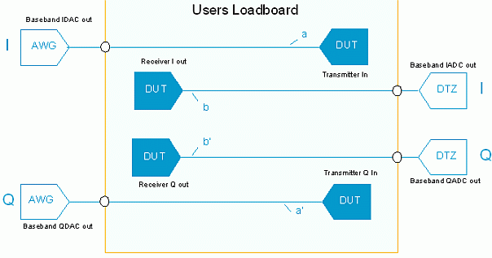
This simplification is accomplished by realizing that the total frequency response of the I/Q path is the result of two contributors. One is inside the tester itself; the other is on the load board. If the tester's analog path is calibrated at a test program's set of specific frequencies using a dedicated common DUT board whose "loop back" paths resemble those above, then base calibration factors can be stored to disk.
When the specific DUT board is used to test a device, the magnitude and phase imbalances from the traces on the board are added to these base calibration factors in the form of time delays in seconds and attenuation values in dB. All that is required is, that the DUT board path lengths a=a' and b=b' and that the user of the DUT board derive these values, and plug them into the test program calibration factors.
Why should Baseband I/Q Calibration be done?
After basic system calibration, the MCB amplitude and digital timing has been calibrated at spot frequencies. But system calibration cannot calibrate out:
- Either the absolute or relative phase or magnitude imbalance between two AWG or DGT transmission paths through the test head up to the pogo pin. These are frequency dependent and a function of nonlinearities in such transmission paths caused by inline attenuators, gain stages, and filters. There are too many variables for system calibration to handle.
- Loadboard buffer and/or trace length mismatches.
Baseband I/Q Calibration (BIQC) allows the user to compensate for these perturbations in a reasonably simple manner on a per frequency basis.
BIQC greatly improves the fidelity of the following RF and baseband measurements:
- Multi-tone power ratio tests (MTPR). MTPR tests are ones where the cumulative inter-modulation distortion (IMD) components of many tones accumulate to form energy in what should be a missing tone location. Just a small phase imbalance between I and Q signals will add significantly to the IMD component found in this missing tone location. Better phase balance added by performing BIQC will reduce the amount of this IMD and decrease the missing tone component of the MTPR. See Appendix B for more information.
- The amount of upper or lower RF side band suppression on either side of an RF carrier, as seen on the TX side of an RF transmitter, is a strong function of the balance between the magnitude and phase of a tester's I/Q AWG base band input pair (see appendix C for the mathematical derivation of this dependency). Similarly, the ability of a DUT RF receiver to down convert signals is measured by how "in balance" it's I/Q AWGs are. If the testers I/Q DGTs are not balanced, the device could be perceived as bad even though it is the tester which is uncalibrated or out of balance.
- Error Vector Measurements (EVM) as used in testing 802.11a/b/g transceivers are highly sensitive to phase and magnitude imbalances. When testing this type of device, it is highly desirable that the testers AWG/DGT are as balanced as possible. Appendix D has more information.
When should Baseband I/Q Calibration be done?
There are two answers to this question. Theoretically, all analog instruments have given frequency responses which differ from one unit to another. Variances across identical instruments are usually handled by applying loose enough spec's to handle the Gaussian deviation of performance across all manufactured boards. The result is the lost opportunity to access the true accuracy of an individual analog instrument that is, unless BIQC is performed before production test.
System calibration guarantees performance to all analog card specifications. BIQC increases analog card accuracy above that specified for the family. It reveals and compensates for the individual card's frequency response as well as the load board perturbations introduced by buffers or trace length mismatches.
So, BIQC should be done whenever highly balanced I/Q signals are to be sourced or measured by the I/Q AWG or DGTs of the MCB and it is know that such qualities are frequency dependent. Typically, when baseband or RF measurements are to be made, BIQC should be done.
Practically speaking, due to the method of implementation of Baseband I/Q calibration into the SmarTest software, it should be re-run whenever a program implementing BIQC:
- Is run on any 93000 tester for the first time.
- Is run on a new MCB (if an old MCB is replaced for an existing one )
- A new test is added to the program which requires highly balanced I/Q signals and new analog sets are created.
- A new pin configuration is used in the program.
- A new analog setup is used in the program
Later on in this paper, the reasons for all of these will become clear.
It is not required to re-run BIQC for every DUT board for a given device since BIQC calibrates up to the pogo pin plain. Phase and magnitude offsets of a given DUT board are added to the BIQC calibration factors by way of a member function of a new API class. The arguments to these API may have to be modified whenever:
- A new DUT board is developed for the same device or its baseband traces have changed.
- In-line components (i.e. Buffers) on the DUT board are "swapped out" because of damage.
How is Baseband I/Q Calibration done?
The bulk of this paper is dedicated to this description. The program referenced herein will be available as a simple loop back programming example to be located on Source Forge.
But in short, BIQC is accomplished during the following steps:
- Surround the production program flow with test method which call "Calibration Condition" start and stop APIs.
- Insert into the C++ of any test method needing Baseband I/Q Calibration the "activatePathSkew" API.
- Create the Calibration Condition by executing the modified flow.
- Create the calibration offsets by executing Analog Calibration from the diagnostics menu.
- Create the test suite which loads the calibration offsets.
- Create the test suite which applies the DUT board offsets.
- Run the program which applies these calibration offsets.
Downloading the base program from Source Forge
The SmarTest program which had been created in the implementation of Requirements numbers 1,2, 3 and 4 of the Requirements documents will be augmented to accommodate the implementation of Baseband I/Q Calibration.
The user will modify the program previously created in the directory called "CPE" as a part of the Requirement number 4 exercise or will copy the program page and modify it. To access the program, please contact your Advantest representative. The name of the program at this location is: CPEImplementationRequirement4_tar.gz.
Program directory creation
Unzip and untar the downloaded directory.
Rename the directory to: CPEImplementationRequirement4.1.
A copy of the model file resides in the program directory above; its name is <model.file.to.be.used.with.this.program>
An example model file is also found in this document under Appendix A.
If the user is doing off line development, it will be necessary to export the model file into the xterm environment using the following command:
export AGILENT93000_MODEL='model.file.to.be.used.with.this.program'
This model file has references in it to the MCB hardware and will enable users to develop programs off line.
Change directories into the CPEImplementationRequirement4.1 directory (if not already done).
Start SmarTest using the command: SmarTest&.
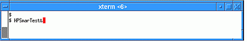
Click the Change Device Button when the software comes up. (Step 1).
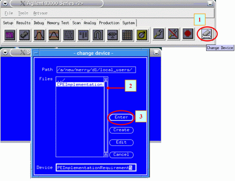
- Click the directory (CPEImplementationRequirement4) which now shows in the popped up panel (Step 2).
- In the window which appears next click "Enter" (Step 3).
Top Level Program Loading
Bring up the Data manager by clicking the purple icon found under the "setup" tab of the top level window.
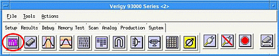
The program will already be named "CPE".
- Click the TestProg icon.
- Click the Load button.
- Create a new flow name: "CPEReq4.1" for Comprehensive Programming Example Requirements 4.1. Do this by clicking the flow icon (which should currently be named: CPEReq4) and rename it, again, to CPEReq4.1
The actual process is described systematically below in terms of the SmarTest GUI windows used.
Load the flow called: CPEReq4
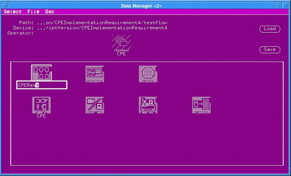
The flow below will appear.
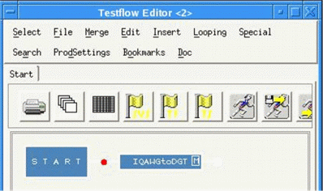
Calibration Condition Creation
As mentioned previously, the path which analog signals take through an MCB up to the pogo pins will have a given frequency response. Phase and magnitude calibration offsets for a given tone frequency can only be gathered if SmarTest has knowledge of the analog setup of a given test suite. Information about the DGT and AWG settings must be recorded prior to the actual calibration. After the necessary modification have been made to the program these calibration specifics or "conditions" are logged by smarTest.
Definition: Calibration Condition
A calibration condition is a description of the analog instrument set specifics which are to be logged to disk and used later as calibration criteria by Baseband I/Q Calibration when it is formally executed from the diagnostic/calibration menu. These specifics are the tone frequency, master clock rate, connection type and the name of analog set being used. Connection type would be single or differential.
What follows is a description of the modifications to a SmarTest program used to teach it how to perform Baseband I/Q Calibration.
The first step when implementing baseband I/Q calibration is to edit the flow in order to create what is called the "Calibration Conditions".
Modifying the test flow to create Calibration Conditions
Open the Eclipse editor and create a new test method whose name is "beginCalConitionCollect".
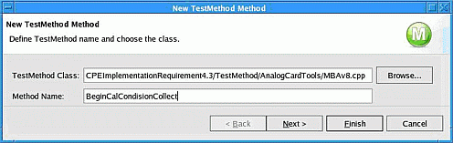
The parameter pass into the test method will be the name of the Calibration Condition file. In this case we have named the variable "BBIQCalDataFileName".
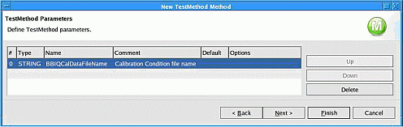
In the C++ code, enter the command: BCAL.beginCalConditionCollect(BBIQCalDataFileName);
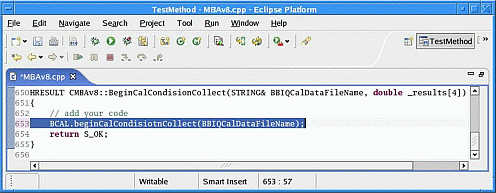
- In front of the first test suite in the flow insert a test suit and name it: "CalCondisionBegin".
- Fill out the primary fields as shown new
- Enter the name of the newly created test method: "beginCalConditionCollect".
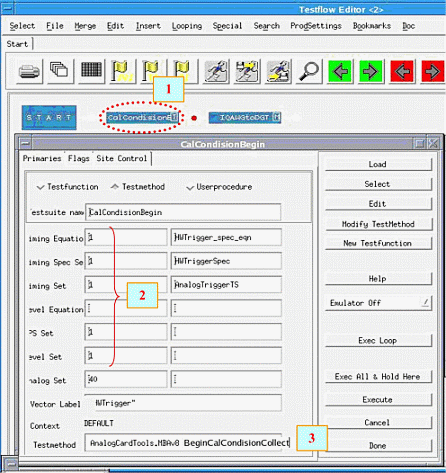
In the test suit parameter dialog box type in the name "CPEReq4.1" as the name of the Calibration Condition File name.
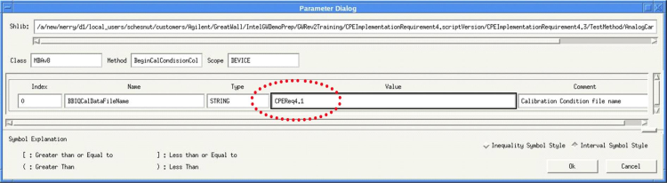
Next, create a test method whose name is EndCalCondidtionCollect.
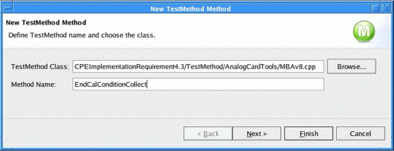
We will not be passing any parameters into the test method.
In the C++ code, enter the command: BCAL.endCalConditionCollect();
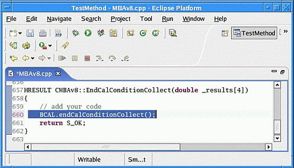
Insert another test suite at the end of the flow. Fill out the same primaries as in the above test method. Select the newly created test method: "EndCalConditionCollection".
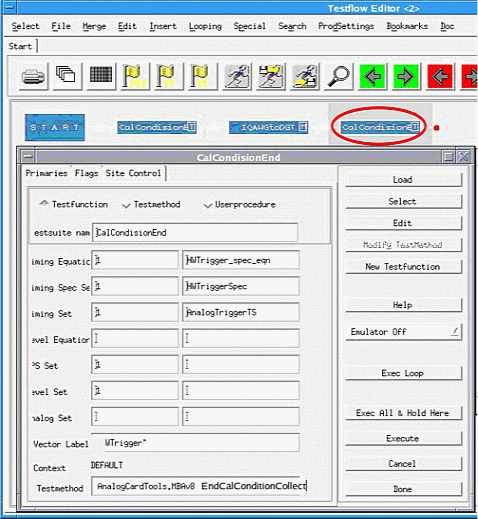
In the case above there is only one test suite whose calibration conditions are being collected. But in true production program, there may be any number of test suites between the Calibration Condition collection begin and end.
Save this flow as the new name CPEReq4.1
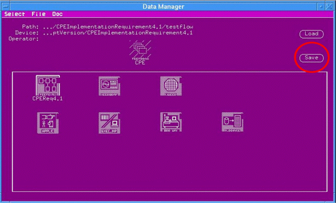
Modification of the existing test method C++
We now want to modify the C++ code of every test method which is to use baseband I/Q calibrated signals. Here we will effectively tell SmarTest that, for this test method, we want it to make a log in the Calibration Condition file of the analog instrument setup.
The first step is to open the test method editor.
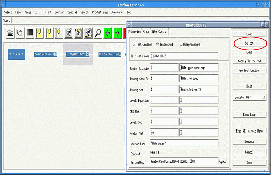
Enter the code below which has been highlighted in blue. The "BCAL.activatePathSkew" command is a member function of a new class of API.
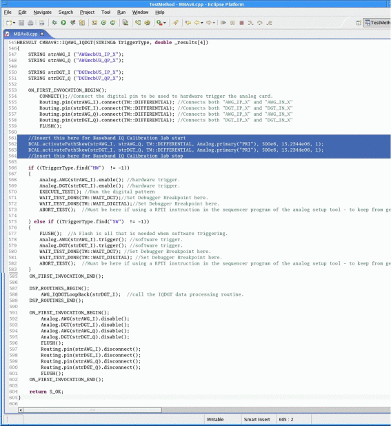
New API Class: BCAL.loadCalData & BCAL.activatePathSkew
This new class of API has two new member functions. These are outlined below.
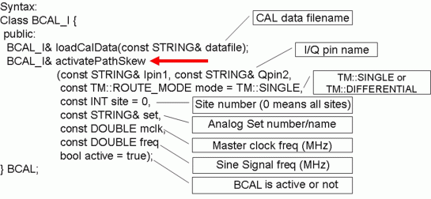
In our C++ implementation we used the "activatePathSkew" member function. The member function serves two purposes:
- When collecting the calibration condition this API precipitates the entry of the analog setup information into the calibration condition file.
- During production, after the Baseband I/Q calibration data has been loaded, this API applies the offsets to the pins and analog set specified.
The primary set "PRI" is selected because it refers to the current primary set. The calibration tone frequency 15.2344MHz is selected since this is the frequency of the looped back signal on the loadboard. The master clock is currently set to 500MHz in the analog set so it appears as 5th argument of the call.
If one opens the analog set for this test (set 40) and examines the master clock frequency, it will be verified to be 500MHz.
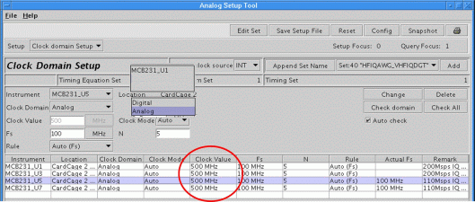
IMPORTANT: A flush(), EXECUTE_TEST(), START_TEST() or FUNCTIONAL_TEST() is required after the activatePathSkew command.
Verification of Baseband I/Q Calibration functionality
In order to verify that Baseband I/Q Calibration has an effect on the accuracy of the MCB AWG and DGT, we will want to modify the DSP routine so that it calculates the relative phase and magnitude imbalance between the I and Q signals. We will run the program with and with out BIQC and note the difference in accuracy.
Below is the routine where the digitized waveform of is retrieved. The section highlighted in blue should be entered by the user. This section of code records the fundamental bin of the signal for future users.
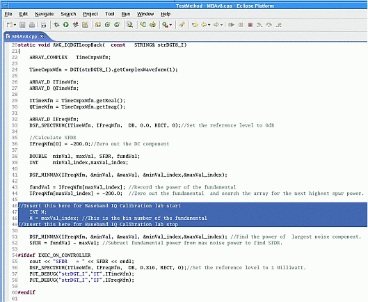
Next the code required to calculate the relative phase and magnitude of the I and Q signals is to be entered (the entire section contained in the blue box).
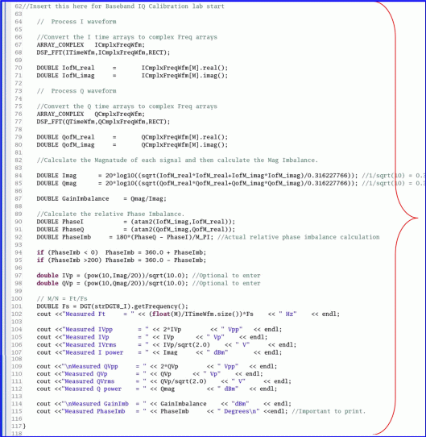
Once the edits have been made, compile the program.
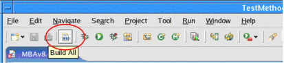
Hardware Connections on the DUT Board
Before debug of the C++ code, the load board connections must be made to loop back the IQ AWG output to the IQ DGT input, two connections will be required:
Connect a trigger line from digital pin 10101 to pin 17 S2 of slot 231 or 228 (depending on where the MCB is installed). This wire will send the digital triggering pulse from the digital pin to the trigger in put of the MCB. Connection of the hardware trigger is optional since the I/Q pair are in master slave mode. This means that the trigger delay between them is not effected by use of the HW or SW trigger.
Before debug of the C++ code, the load board connections must be made to loop back the LF AWG output to the LF DGT input, three connections will be required:
- Connect a trigger line from digital pin 10101 to pin 17 S2 of slot 231 or 228 (depending on where the MBAv8 is installed). This wire will send the digital triggering pulse from the digital pin to the trigger in put of the MBAv8.
- Connect pin 16 S2 of slot 231 or 228 to pin 16 S1 of the same slot.
From Pin (slot 231 or 228) |
|
To Pin (slot 231 or 228) |
||
|---|---|---|---|---|
Pin Name |
Connection on DUT board |
|
Pin Name |
Connection on DUT board |
|
|
|
Digital Pin 10101 Hardware trigger input |
17 S1 |
AWGmcbU1_IP_X |
16 S2 |
--> |
DGTmcbU5_IP_X |
16 S1 |
AWGmcbU1_IN_X |
15 S2 |
--> |
DGTmcbU5_IN_X |
15 S1 |
|
14 S2 |
|
|
14 S1 |
|
13 S2 |
|
|
13 S1 |
AWGmcbU3_QP_X |
12 S2 |
--> |
DGTmcbU7_QP_X |
12 S1 |
AWGmcbU3_QN_X |
11 S2 |
--> |
DGTmcbU7_QN_X |
11 S1 |
|
10 S2 |
|
|
10 S1 |
|
9 S1 |
|
|
9 S1 |
Below is a picture of the connections required to source the IQ AWG to the IQ DGT.
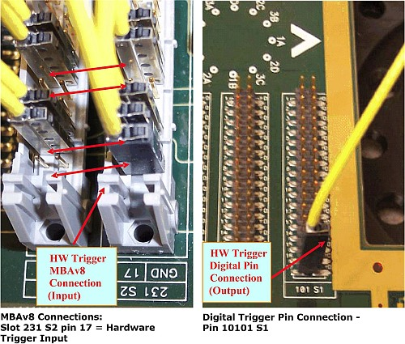
Collection of the Calibration Conditions
At this time, we are ready to run the program.
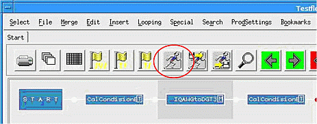
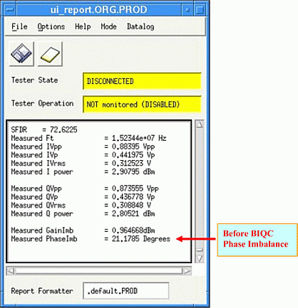
To verify that the routine has executed correctly the signal analyzer tool can be brought up to witness the captured waveform.
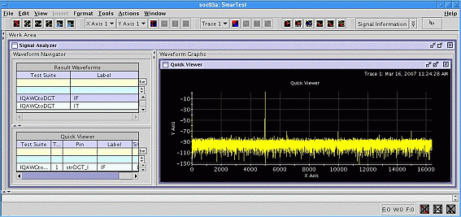
It is important to note that, thus far, we have accomplished two things. First we have modified the test flow in order to "instruct" smarTest to collect calibration conditions. Then we modified the C++ code to calculate the magnitude and phase imbalance between the I and Q signals.
By executing the program, smarTest also performs two things also. It first collects the calibration condition information and stored it to disk. Next, our program measured the phase and magnitude of the I and Q signal. Baseband I/Q calibration has NOT been executed.
Calibration Condition File
The calibration condition information has been stored to disk in the "calibration" directory of the test program directory in a file whose name is that of the test flow. Below is information regarding the location of the calibration condition file as well as its contents. The contents of this file obey a syntax which is explained in Appendix E.
This file could have been created while running the software in offline mode, without actually being connected to the tester. This convenience gives users the ability to avoid actually using a system in order to create calibration conditions.
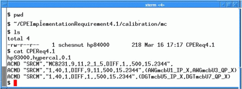
It is important to realize that Baseband I/Q Calibration has not been performed. All that has occurred till now is the collection of the conditions under which this calibration will occur in the future.
Executing Baseband I/Q Calibration
Now that the calibration conditions have been created, BIQC can be performed. First bring up the calibration GUI.
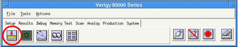
Then select "Analog Calibration" from the "Tools" pull down.
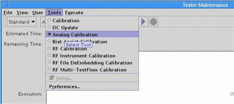
Select "Run" from the "Execute" pull down.
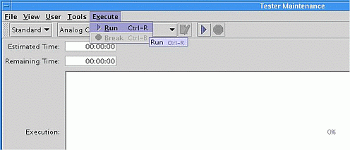
- In the window which appears, click the Execute MCB Gain/Phase Repeatability Calibration radio button.
- In the sub panel which appears, enter:
- Then name of the pin configuration
- The analog set name
- The calibration condition name (the same name as the test flow).
- Click the START CAL button.
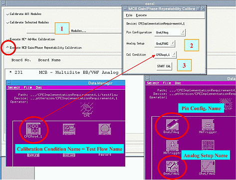
The calibration condition file name which was chosen happens to be the same name as that used by the test flow. But it is not required that this be the case. The calibration condition file can be called any name.
You will be prompted to dock the first calibration board: E9728A as below
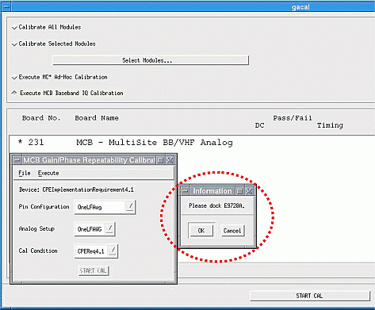
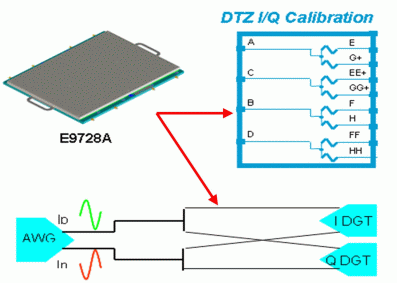
When prompted, mount the second calibration board on the head.
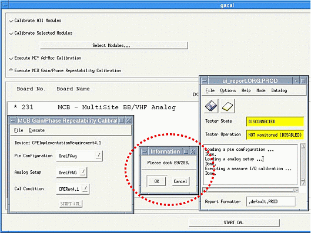
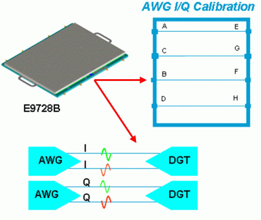
Once complete, the data collected by the calibration procedure has been saved on the host system controller at the pathname listed below:
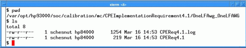
The contents of the Baseband IQ Calibration log file are below:
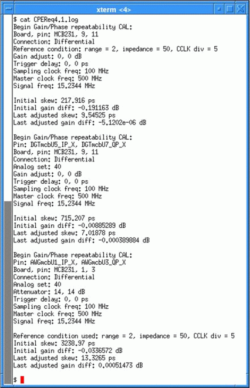
The contents of the Baseband I/Q Calibration file is below. Here we can see contained some of the same arguments passed into the "activatePathSkew" command. The exact syntax of this file is found in the Appendix E:
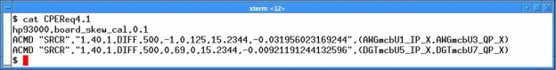
More about the FW syntax of this file can be found in Appendix E.
After calibration is complete, it will be necessary to reload the program.
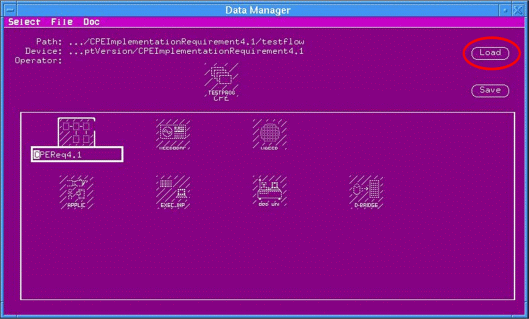
When prompted as below, be sure to click "Do not save".
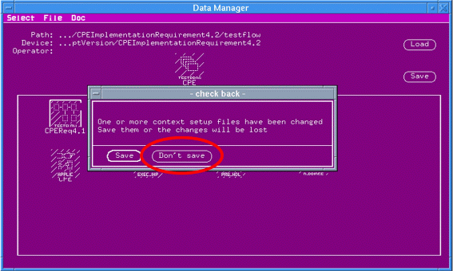
Load the program setups
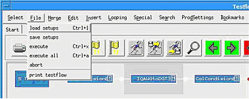
Loading the Calibration Data
Now that the calibration data has been created by smarTest it is time to access it from the test program. This is done through the use of the second new API: loadCalData.
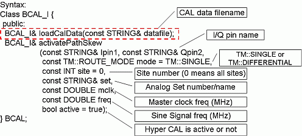
First create a new test method called LoadBBIQCalData.
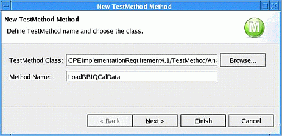
The only parameter to be passed in to the test method is a string which will contain the name of the calibration file.
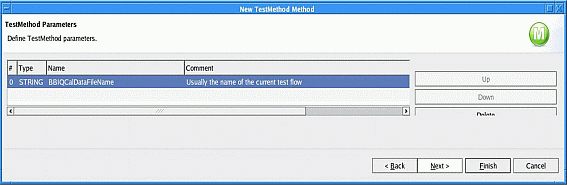
In the body of the test method, enter the following line of code:
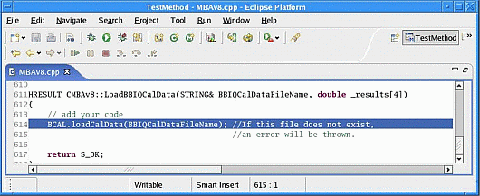
Modify the flow as shown, inserting a test suite whose purpose is to load the Baseband I/Q Calibration factors using the test method created above.
Open the test suit parameter list and specify the name of the calibration file. In this case the name is that we gave the calibration condition and the name of the flow.
Now paste in to the new branch of the flow a copy of the original test suit: IQAWGtoDGT as shown below.
Remember to put the DUT board back on the head.
Be sure to change the "If" condition in the flow to 0, hit test button, and notice that the phase measurement has gone from 21 degrees to 0.49 degrees.
USER NOTE: It is important to realize that if the calibration conditions are accidentally recollected because the "1" in the "if" condition is not changed to "0", and then user then realizes the mistake and executes the "0" condition path after recollection of the calibration conditions, then the following run time error will occur:
"Error: loadCalData("CPEReq4.1)
E10099: Board skew CAL data '/var/opt/hp93000/soc/calibration/mc/CPEI4.1_529/OneLFAwg_OneLFAWG/CPEReq4.1' is not updated after conditions modification."
This error is occurring because the time stamp of the calibration condition file:
./CPEImplementationRequirement4.1/calibration/mc/CPEReq4.1
is later than the time stamp of the calibration factors file:
/var/opt/hp93000/soc/calibration/mc/CPEI4.1_529/OneLFAwg_OneLFAWG/CPEReq4.1
Ordinarily a complete recalibration would be required to rectify this problem. But by executing the following command from a shell window, a newer date is assigned to the calibration factors file and the problem is solved without the necessity to recalibrate:
"touch /var/opt/hp93000/soc/calibration/mc/CPEI4.1_529/OneLFAwg_OneLFAWG/CPEReq4.1"
Before Baseband IQ Calibration After Baseband IQ Calibration
We know from the MCB specification that IQ AWG and DGT trigger skew is specified as being +/-100pS (contained in the ERS and specification sheet). If we wanted to see how much actual skew we currently are experiencing, the equation used to convert degrees into time is as follows:
MCB Phase Specification
The MCB phase imbalance after the calibration is specified below.
DGT
- 0.7degree @ 20MHz, 100MSa/s Fin:0-30dB full scale in case calibrated at 20MHz,>1024point
- 0.3degree @ 5MHz, 100MSa/s Fin:0-30dB full scale in case calibrated at 5MHz,>1024point
AWG
- 1 degree @ 20MHz, 200MSa/s, Fout:0-30dB full scale in case calibrated at 20MHz,>1024point
- 0.4degree @ 5MHz, 200MSa/s, Fout: 0-30dB full scale in case calibrated at 5MHz,>1024point
Application of DUT board Offsets
We have calibrated the MCB for every frequency of our simple program up to the pogo pin plane. If the user mounts a DUT board it will introduce its own phase and magnitude response which will have to be compensated for. We will do this using two new API:
- adjustGain
- adjustDelay
Loadboard Gain and Phase Adjustment
Let's start by creating a new test method. Call it AdjustForLoadBoardPhaseAndGain.
No parameters are passed into this test method so click "Finish".
Type in the code below. The value for gain and delay has been purposely set to zero because the wires on the loadboard used in the development of this paper are expensive and highly matched. They have imparted no phase or magnitude imbalance. However the user's loop back cables may not be of such quality and require that the delay be adjusted (at least). This activity would be performed in this routine.
Insert the "AdjustForLoadBoardPhaseAndGain" test method in the flow just before the actual production test.
New API Test Execution Times
The new BCAL API need only be executed once per lot not for each device. Therefore the test time associated with execution of each API is not important except that it is nice to know that they are not long.
Below is the test execution time associated with the execution of the new Baseband I/Q Calibration API commands. Note that these times will differ as the number of analog sets in the program which have been calibrated increases. In the case of the example, only one analog set calibration data is being used.
API Run During Production |
Test Time mS |
Number of Required Executions |
|---|---|---|
BCAL.adjustGain |
6.5 |
1st run only |
BCAL.adjustDelay |
6.5 |
1st run only |
BCAL.activatePathSkew |
0.1 |
1st run only |
BCAL.LoadCalData |
2 |
1st run only |
GUI Calibration Times
The time required to run the GUI base Baseband IQ Calibration was collected for a set of 310 different tone frequencies. It is found that 45 minutes (3/4 hour) is the length of time required for completion for this large number. This works out to 8.7 seconds per frequency.
This large number of I/Q frequencies was chosen in order get an approximate time per frequency. It is not likely that a typical production program would have this many I/Q frequencies.
Recommended Calibration Interval
It is expected that Baseband I/Q calibration be executed at the same intervals as the system calibration, which is 3 months.
Conclusion
We began by identifying the requirement to match I and Q in phase and magnitude. Our motivations were to make more accurate measurements which are magnitude and phase sensitive. These where: MTPR, side band suppression and EVM.
We then saw how SmarTest has been updated to enable test flows to be analyzed for a set of "calibration conditions". These where collected after making minor modifications to test flow and test methods requiring matched I/Q AWG or DGT pairs.
The test method was modified to measure phase and magnitude imbalance between the companion I and Q signals. The phase imbalance is found to be approximately 20 degrees at a tone frequency of 15MHz.
The SmarTest analog calibration menu was brought up and a Baseband I/Q calibration was executed from the GUI menu. This process required that we mount two boards, sequentially on the test head after being prompted by the software. The first board function is to calibrate the I/Q DGT pairs. The second board function is to calibrate I/Q AWG pairs. When completed, Baseband I/Q calibration factors where stored to disk at a system directory.
Once this process was complete, the test program was reloaded, the BIQC calibration factors read from disk, and the I/Q phase and magnitude imbalance was re-measured. The phase imbalance is found to be approximately 0.5 degrees at a tone frequency of 15MHz. This result is 43 times more accurate than that measured without BBIC being run.
Appendix A Model file Example
Below is an example of the model file to be loaded before running the CPE in software only mode. The command to evoke this model file, from the xterm where SmarTest is started is as follows:
export AGILENT93000_MODEL=model.file.to.be.used.with.this.program /////////////////////////////////////////////////////////////////////////////////////////////////////////////////// # Example model file: model.file.to.be.used.with.this.program GLOBAL tester = Ce # P | C | Ce | MCU testhead = 1024 # 256 | 512 | 1024 dut_interface = SOC # F330| SOC | EXHIBITION IOCHANNEL 10101-11916: model = C400e, sram = 2M, sdram = 28M ANALOGBOARD 231: TYPE = MCB BOARDCONF #MCA: BOARD=228, MODULE=8, MTYPE=MESA MCB: BOARD=231, MODULE=1, MTYPE=SRCB MCB: BOARD=231, MODULE=2, MTYPE=SRCB MCB: BOARD=231, MODULE=3, MTYPE=SRCB MCB: BOARD=231, MODULE=4, MTYPE=SRCB MCB: BOARD=231, MODULE=5, MTYPE=MESB MCB: BOARD=231, MODULE=6, MTYPE=MESB MCB: BOARD=231, MODULE=7, MTYPE=MESB MCB: BOARD=231, MODULE=8, MTYPE=MESB
Appendix B Effects of Baseband I/Q Calibration on MTPR
The plot below indicates that the Multitone Power Ratio (MTPR) can be increased if Baseband I/Q calibration is performed.
Appendix C: Derivation of the equations describing sideband suppression as a function of AWG I an Q phase and magnatude imbalance
Below are plots of Equation 8. The top plot is results when the relative phase between the signals at input channel 1 and 2 is swept from -180 degrees to 180 degrees. This is accomplished by holding the absolute phase of channel one constant while moving the phase of channel 2 through this range.
The plot below this, results when the relative magnitude is swept from 0Vp to 2Vp while holding the signal on channel 1 constant at 1Vp.
Plots of negative tone sideband suppression as a function of relative phase and magnitude between RookII channels 1 and 2.
Appendix D Effects of Baseband I/Q Calibration on EVM
Appendix E Baseband I/Q Calibration Firmware Syntax
There are two new firmware commands which support Baseband I/Q Calibration. These are:
SRCM : Gain/Phase Baseband I/Q CAL measurement FW syntax
This command executes the Baseband I/Q Calibration measurement. It checks the current configuration for measuring pins and trigger and specified Analog Set.
Second syntax is used to Reference CAL. Reference CAL calibrates the digitizer pair, and this result is used for AWG CAL. Reference CAL data is only stored in HW and it is not able to upload/download by hardware.
Command syntax:
ACMD "SRCM","<core>,<aset>,<site>,<cnct>,<ref1>,<ref2>,<mclk>,<freq>",(<pin1>,<pin2>) <core>: Core number. Default is 1. <aset>: analog set name <site>: site number <cnct>: connection mode. SGL or DIFF <ref1>: reference pin number for pin1 <ref2>: reference pin number for pin2 (for AWG CAL only) <mclk>: Master clock freq (MHz) <freq>: Signal freq (MHz) <pin1>: pin 1 name string <pin2>: pin 2 name string ACMD "SRCM","<board>,<pnum1>,<pnum2>,<range>_<impd>_<divn>,<cnct>,<ref1>,<ref2>,<mclk>,<freq>", <board>: board ID. Example MCB232 <pnum1>: pin number for pin1. 1 to 32 (same as DFAN command) <pnum2>: pin number for pin2. <range>: volt range. 4, 2, 1, 0.5 or 0.25 <impd>: input impedance. 0 means 10K, 2 means 50ohm. <divn>: divide ratio of sampling clock
Usage Example:
The calibration condition information is stored to disk in the "calibration" directory of the test program directory in a file whose name is that of the test flow. Below is information regarding the location of the calibration condition file as well as its contents. The contents of this file obey a syntax which is explained in Appendix E.
This file could have been created while running the software in offline mode.
It is important to realize that Baseband I/Q Calibration has not been performed. All that has occurred till now is the collection of the conditions under which this calibration will occur in the future.
SRCR Baseband I/Q Calibration result download and upload FW
This command is used to download Baseband IQ CAL result into Tester. And Query is used to upload CAL result from Tester. Baseband IQ CAL result file format is collection of this download FW by plain text.
Command syntax:
ACMD "SRCR","<core>,<aset>,<site>,<cnct>,<mclk>,<count>,<ecode1>,<code2>,<gain>,<freq>",(<pin1>,<pin2>) <core>: Core number. Default is 1. <aset>: analog set <site>: site number <cnct>: connection mode. SGL or DIFF <mclk>: Master clock freq (MHz) <freq>: Signal freq (MHz) <count>: Relative deskew counter value for pin1 & pin2 <code1>: Analog vernier code for pin1 <code2>: Analog vernier code for pin2 <gain>: Relative corrective gain for pin1 & pin2 <pin1>: pin 1 name string <pin2>: pin 2 name string
Query syntax:
ACMD? "SRCR","<core>,<aset>,<site>,<cnct>,<mclk>,<freq>",(<pin1>,<pin2>) <core>: Core number. Default is 1. <aset>: analog set <site>: site number <cnct>: connection mode. SGL or DIFF <mclk>: Master clock freq (MHz) <freq>: Signal freq (MHz) <pin1>: pin 1 name string <pin2>: pin 2 name string Returned syntax is same as command syntax.
This command is used to download Gain/Phase Repeatability CAL result into Tester. And Query is used to upload CAL result from Tester. Gain/Phase Baseband IQ CAL result file format is collection of this download FW by plain text.
Usage Example:
After Baseband I/Q calibration is executed from the GUI, the data collected by the calibration procedure has been saved on the host system controller at the pathname listed below:
The contents of the Baseband IQ Calibration log file are below:
The contents of the Baseband I/Q Calibration file is below and this is where the "SRCR" command is used.
SRCA: Baseband I/Q Calibration condition activation and deactivation FW
Command syntax:
ACMD "SRCA","<core>,<aset>,<site>,<cnct>,<mclk>,<actv>,<freq>",(<pin1>,<pin2>) ACMD? "SRCA","<core>,<aset>,<site>,<cnct>,<mclk>,<freq>",(<pin1>,<pin2>) <core>: Core number. Default is 1. <aset>: analog set <site>: site number <cnct>: connection mode. SGL or DIFF <mclk>: Master clock freq (MHz) <freq>: Signal freq (MHz) <actv>: YES means activated, NO means deactivated <pin1>: pin 1 name string <pin2>: pin 2 name string ALL is usable for any parameter in query. Query returns as same as command syntax.
This command is used to activate or deactivate downloaded Gain/Phase Repeatability CAL result. And this query is used to check activation state. No return means no specified CAL is downloaded or measured.
Command syntax:
ACMD "SRCU","<core>,<aset>,<site>,<cnct>,<mclk>,<freq>",(<pin1>,<pin2>) <core>: Core number. Default is 1. <aset>: analog set <site>: site number <cnct>: connection mode. SGL or DIFF <mclk>: Master clock freq (MHz) <freq>: Signal freq (MHz) <pin1>: pin 1 name string <pin2>: pin 2 name string
This command is used to erase downloaded Gain/Phase Repeatability CAL result.
SRCB : Baseband I/Q Calibration condition collection FW
Command syntax:
ACMD "SRCB","<name>", <name>: CAL condition filename
This command starts CAL conditions recording. If file is already created, it is overwritten.
Each time FLSH is done with Gain/Phase Repeatability CAL is activated analog set, ACMD "SRCM" FW command and other setup are written in this file.
Command syntax:
ACMD "SRCE",,
This command stops CAL condition recording.
Appendix F: Using test functions to create Calibration Condition: An alternative to test method calls.
Calibration conditions can be created using test functions instead of C++ test method calls.
- Open the original flow.
- In front of the first test suite in the flow insert a test suit and name it: "CalCondisionBegin".
- Fill out the primary fields as shown and create a new test function of the type "FW_escape".
- Fill in the command: ACMD "SRCB","CPEReq4.1",
Be sure to enter the last comma in the string. This is the command which tells smartest to start collection of the calibration conditions it encounters during execution of the flow. Also notice that the last argument is the name of the current flow. This command basically says: "Begin collecting the information used by this program to source and measure analog signals and store them to the disk".
Next, insert another test suite at the end of the flow. Fill out the primaries as above. Create an FW_Escape test function whose name is CalConditsionEnd and enter the string:
ACMD "SRCE",,
Notice the double comma at the end of this string. The purpose of this suite is to stop collection of the Calibration Conditions. This command merely says: "End of Calibration Condition collection".
In the case below there is only one test suite whose calibration conditions are being collected. But in true production program, there may be any number of test suites between the "begin" and "end".
Save this flow as the new name CPEReq4.1.